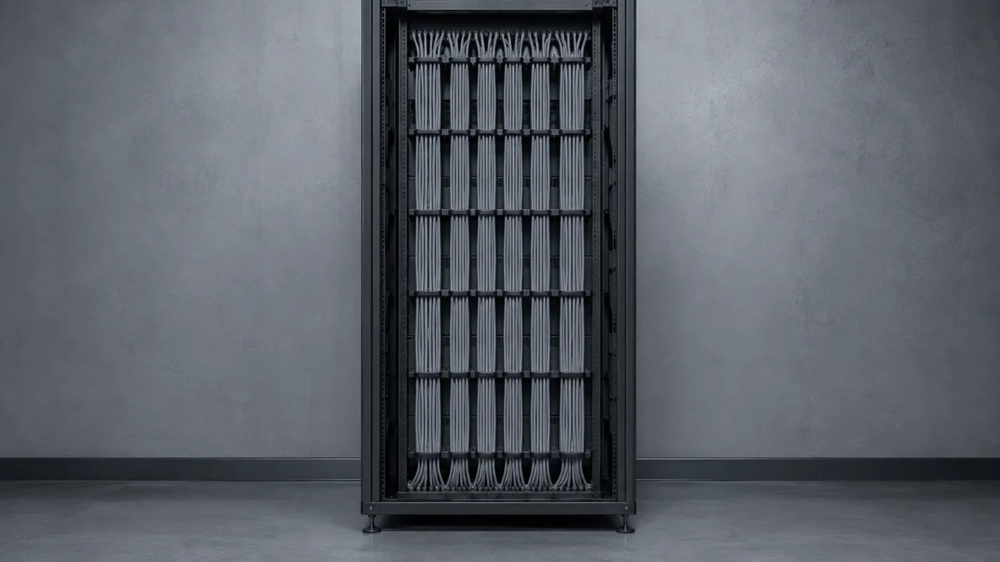
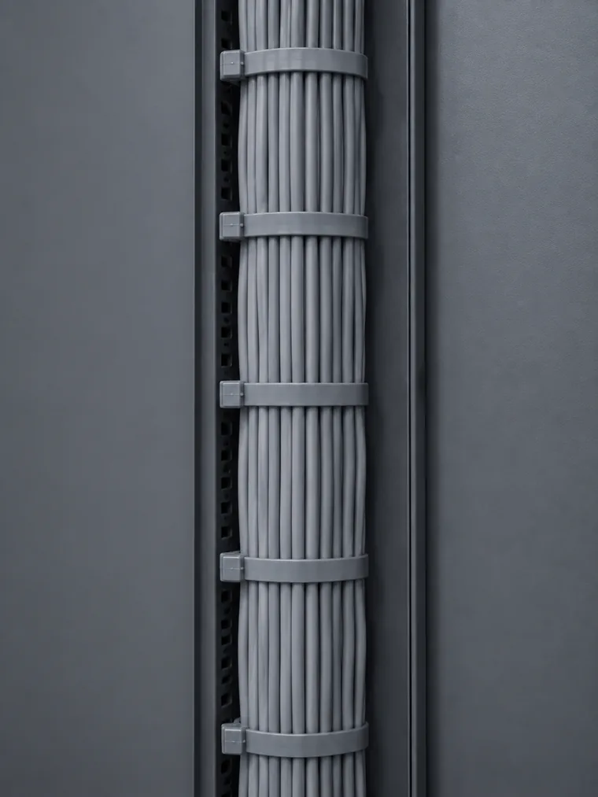
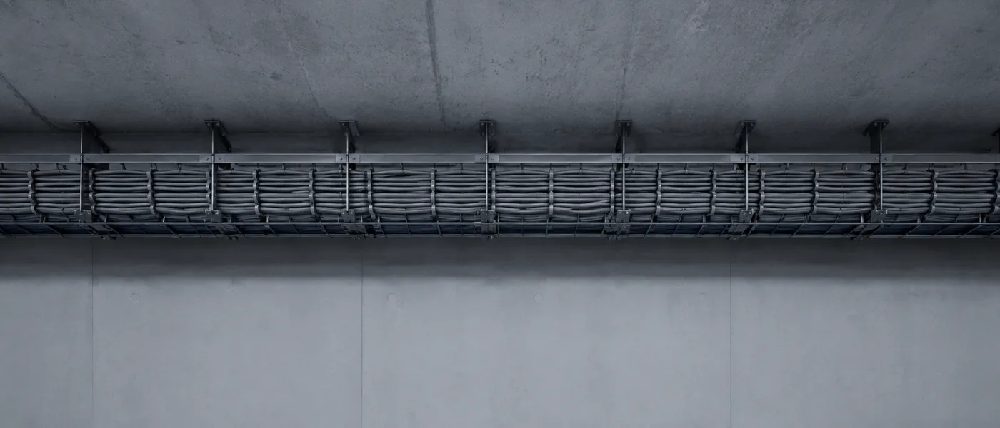

Corrections
Petites modifications et ajustements nécessaires au quotidien : un texte, une photo, un horaire, un lien qui a changé. Ce sont les demandes les plus fréquentes, et les plus rapides à traiter.

Un site mis en ligne n'est pas un site terminé. J'accompagne les sites après leur mise en ligne pour les garder propres, fonctionnels et évolutifs — corrections, mises à jour, surveillance et ajustements, selon les besoins du projet.
Un site vit. Il change avec l'activité qu'il représente.
Une fois en ligne, un site continue d'exister. Les contenus évoluent, des corrections deviennent nécessaires, les besoins de l'entreprise changent. Certaines évolutions demandent du développement, d'autres se règlent en quelques minutes.
Les performances peuvent être surveillées, les éléments techniques contrôlés, les sauvegardes tenues à jour selon l'environnement du projet. Rien de tout cela n'est spectaculaire — c'est justement le but.
Ce que je cherche à préserver tient en un mot : un site qui reste maintenable. Un site qu'on peut encore modifier deux ans plus tard sans tout reprendre.


Ce qui fonctionne ne se remarque pas.
Ce qui lâche, si.
Petites modifications et ajustements nécessaires au quotidien : un texte, une photo, un horaire, un lien qui a changé. Ce sont les demandes les plus fréquentes, et les plus rapides à traiter.
Ajout ou modification de contenus et de fonctionnalités. Une nouvelle prestation, une page à créer, un formulaire à faire évoluer — le site suit l'activité plutôt que l'inverse.
Contrôle et optimisation des ressources lorsque cela est pertinent : poids des images, chargement des scripts, propreté du code ajouté au fil du temps. L'objectif est de préserver ce qui a été construit au départ.
Vérification des éléments techniques importants : balises, données structurées, plan de site, liens internes, redirections. Il s'agit de maintenir des fondations propres, pas de promettre une position.
Application des bonnes pratiques et interventions selon l'hébergement et la configuration du site. Aucun dispositif ne rend un site invulnérable — l'objectif est de réduire les risques évitables et de réagir vite si quelque chose survient.
Mise en place et suivi des sauvegardes, selon les possibilités offertes par l'environnement technique du projet. Pouvoir revenir en arrière reste la protection la plus utile au quotidien.
Par email, par téléphone ou par message. Vous décrivez ce que vous voulez changer, même sommairement.
Je regarde ce que ça implique côté technique et je vous dis franchement si c'est une correction, une évolution, ou quelque chose qui mérite d'être repensé.
Directement dans le code du site. Pas de sous-traitance, pas de transfert de dossier à quelqu'un qui découvre le projet.
Vous savez ce qui a été fait et pourquoi. En formule Pro, un compte-rendu mensuel récapitule les interventions.
Chaque intervention est faite pour que la suivante reste simple. C'est ce qui distingue un site entretenu d'un site rafistolé.
Vous échangez directement avec la personne qui a conçu votre site et qui intervient dessus. Pas de numéro de dossier, pas de premier niveau qui transfère au second.
Je connais le code de votre site parce que je l'ai écrit. Une demande n'a donc pas besoin d'être expliquée deux fois, et une intervention ne commence pas par une reprise en main du projet.
Un site entretenu peut encore évoluer.
Un site abandonné se
refait.
Pour les artisans et commerces du Var qui veulent un site suivi sans avoir à y penser.
Pour les établissements dont le site est un outil de contact quotidien, en saison comme hors saison.
Sans engagement · Résiliable à tout moment · L'hébergement et le nom de domaine restent à votre charge · Votre site vous appartient à 100%
Chaque métier a ses contraintes propres — un restaurant a besoin de modifier sa carte rapidement, une agence immobilière de formulaires de contact fiables, un artisan d'un numéro toujours joignable. J'interviens sur tous les types de sites du Var.
Formulaires de leads contrôlés, listings tenus à jour, galerie photos surveillée côté performance.
→ Agences immobilières Conciergerie & services premiumFormulaires de réservation vérifiés, versions multilingues maintenues, disponibilité surveillée.
→ Conciergeries Broker yacht & nautismeCatalogue tenu à jour, formulaires de demande contrôlés, performances suivies en haute saison.
→ Brokers yacht Restaurant & barMenus et horaires modifiés rapidement, y compris entre deux services en pleine saison.
→ Restaurants Électricien & artisan BTPBouton d'appel et formulaire de devis vérifiés régulièrement, affichage mobile contrôlé.
→ Électriciens Serrurier dépannageDisponibilité du site surveillée et réactivité sur les demandes urgentes.
→ Serruriers Coiffeur & salon de beautéGalerie de réalisations enrichie au fil du temps, horaires et prise de rendez-vous à jour.
→ Coiffeurs Autre activité dans le Var ?Hôtel, photographe, architecte, prestataire événementiel — j'interviens sur tous les types de sites professionnels.
→ Me contacterJ'assure le suivi des sites pour les professionnels du Golfe de Saint-Tropez et du Var, avec la même méthode que vous soyez à Saint-Tropez ou à Toulon.
Saint-Tropez Ramatuelle Gassin Grimaud & Port Grimaud Cogolin Sainte-Maxime Cavalaire-sur-Mer Fréjus Saint-Raphaël Toulon Tout le Var (83)
Le suivi commence dès la mise en ligne : chaque site que je crée est construit pour rester lisible et modifiable dans le temps.
Les sites que je crée et suis pour les professionnels du Var — restaurants, agences immobilières, artisans.
→ Voir toutes les réalisationsComment un site d'artisan est structuré pour rester joignable et rapide sur mobile toute l'année.
→ Voir l'étude de casUn restaurant du Golfe — un site multilingue conçu pour être modifié sans intervention lourde.
→ Voir l'étude de casSi un site est trop vieilli pour être simplement suivi, la refonte permet de repartir sur des bases maintenables.
→ Voir la refonteUne galerie de réalisations pensée pour être enrichie régulièrement sans alourdir le site.
→ Voir l'étude de casDécrivez votre situation en quelques lignes — je vous dis ce qui peut être suivi et comment.
→ Me contacterLa maintenance d'un site internet dans le Var commence à 60 €/mois (formule Basique : 2h de modifications, mises à jour de sécurité, sauvegardes mensuelles, support sous 48h) et 120 €/mois (formule Pro : 4h de modifications, sauvegardes hebdomadaires, compte-rendu mensuel, support sous 24h). Sans engagement, résiliable à tout moment.
Oui. J'interviens sur les sites de tous les professionnels du Var : agences immobilières, restaurants, conciergeries, brokers yacht, électriciens, serruriers, coiffeurs et les PME locales.
Décrivez-moi votre site et ce que vous aimeriez pouvoir changer sans y penser. Je vous dis ce qui peut être suivi, à quel rythme, et à quelles conditions.
Sans engagement · Résiliable à tout moment · Basé à Saint-Tropez, Var 83
Maintenance site internet Var · Maintenance site web Saint-Tropez · Sécurité site web Var 83 · Performance site internet Golfe Saint-Tropez